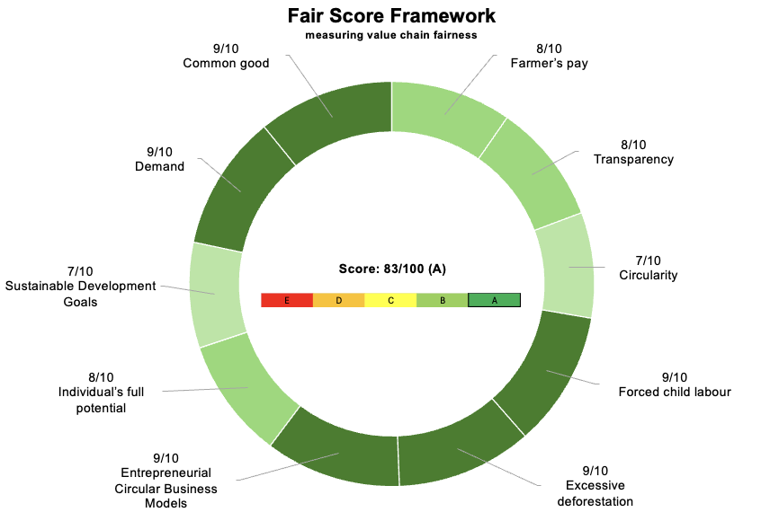

A conceptual model designed to measure value chain fairness.
The Fair Score Framework (FSF) provides a structured, research‑based method for evaluating value chain fairness. It is grounded in peer‑reviewed academic work and designed for practical application in real‑world decision‑making.
The graphic below shows an example of the FSF applied to a value chain:

The criteria used in the Fair Score Framework were developed in research deposited at:
The research also informed a peer‑reviewed journal article:
...as well as a chapter in an academic book: